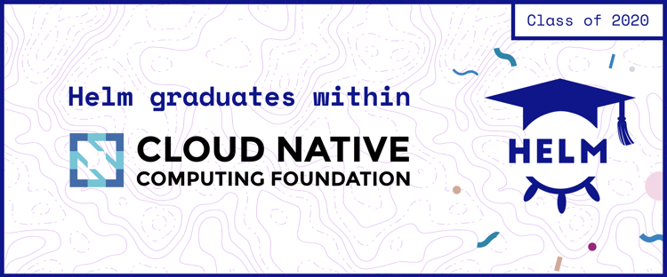

헬름의 CNCF 졸업을 축하하며
Thu, Apr 30, 2020

오늘 헬름이 CNCF 사다리의 마지막 단계에 도달한 것을 보게 되어 기쁘다. 헬름은 CNCF 프로젝트의 인큐베이팅 단계에서 졸업 단계로 이동하여, 쿠버네티스 등 다른 선택된 프로젝트들과 나란히 서게 되었다.
헬름은 작은 스타트업 Deis의 해커톤 프로젝트로 소박하게 시작되었는데, 우리의 작은 아기가 완전히 성인으로 성장한 것처럼 기분이 정말 좋다. 그리고 우리는 지난 5년 동안 코딩, 커뮤니티, 조직 정책에 대해 많은 것을 배웠다. 그러나 이것이 우리가 헬름의 졸업을 축하하는 주요 이유는 아니다.
헬름 프로젝트를 시작하고 몇 달 후, 우리는 쿠버네티스의 하위 프로젝트가 되었다. 그게 2016년 초였는데, 얼마 지나지 않아 사이드 프로젝트 수준이 아닌 쿠버네티스 생태계의 패키지 관리자로 자리매김하게 되었다. 쿠버네티스는 복잡성을 감추지 않고 SRE 및 DevOps 스토리에 집중했지만, 헬름은 다른 접근 방식을 취했다. 2016년 2월 회의에서 Michelle Noorali는 화이트 보드에 다음과 같은 문구를 썼다. "5분만에 0에서 도파민까지" 이것이 우리 헬름의 만트라였다. 새로운 사용자를 쿠버네티스에 더 쉽게 접근하게 할 수 있다고 보았다. 우리가 옳았다면, 사용자는 헬름을 설치하고 몇 분 내로 운영 수준의 규격품 구성요소들을 설치할 수 있을 것이다.
요즘 헬름은 대학생부터 주요 클라우드 제공 업체에 이르기까지 쿠버네티스 사용자의 70% 이상이 사용하고 있다. 신규 쿠버네티스 사용자가 헬름 덕분에 빠르게 설치하고 구동시킬 수 있었다는 얘기를 들을 때가 가장 뿌듯하다.
한편, 헬름의 졸업은 2번째 구별점을 뜻한다. 헬름의 첫 번째 커밋 이래로 우리는 이것을 "쿠버네티스용 패키지 관리자"라고 불렀다. 즉 전반적인 설계의 초점은 쿠버네티스 리소스 정의 번들의 재배포, 설치, 업그레이드, 삭제를 가능하게 하는 것이다. 우리의 목표는 macOS 에서의 homebrew, 데비안/우분투에서의 apt-get, 윈도우에서의 Chocolatey처럼 쿠버네티스에서의 패키지 관리자가 되는 것이었다.
당시에는 대단하지 않은 목표로 보였다. 쿠버네티스(버전 1.2) 사용자도 거의 없었다. 그런데 갑자기 쿠버네티스의 인기가 폭발적으로 증가했다. 몇몇 유명 회사에서는 운영 환경에 사용하기 시작했다. 그런 다음에는 주요 클라우드 제공 업체가 호스팅된 쿠버네티스 상품을 만들었다. 그리고 화려함보다 안정성을 추구하던 대기업들도 쿠버네티스를 본격적으로 사용하기 시작했다. 이것은 헬름에 대한 시험대(acid test)였다. 서로 다른 목표와 요구를 가진 사용자 수십만 명의 요구를 충족시킬 수 있는가? 그런 것 같아 보인다.
"졸업"이라는 용어는 주요 요구사항들을 완수했다는 것을 의미한다. 수많은 사용자 기반을 갖춘 것은 고무적이었지만, CNCF 는 엔터프라이즈 준비도를 시험하는 기준 목록을 제시한다. 안정성, 보안, 강건한 거버넌스, 강력한 커뮤니티 -- 대규모 오픈 소스 프로젝트가 성공하려면 이러한 것들이 절대적으로 필요하다.
CNCF는 프로젝트가 대다수의 사용자들이 사용할 수 있도록 준비되었다는 것을 입증할 때만 졸업시킨다. 인큐베이션에서 졸업으로 이동하기 위한 기준 목록은 안정적인 오픈 소스 프로젝트가 무엇인지를 정의하고 있다. 헬름에는 졸업 기준들이 깊이 녹아있다. 헬름은 보안 검토를 그냥 통과한 수준이 아니라 아주 우수한 성적으로 통과했다. 우리는 CII 뱃지를 획득했을 뿐 아니라, 인증테스트에서 198%를 기록했다. 서로 다른 회사의 커미터 2명만 있었지만, 이제는 전세계적으로 수많은 기여자들이 있다. 그리고 지난 수년간 개방적이고 공정한 거버넌스라는 우리의 약속을 지켜왔다.
그래서 지금 우리는 이 이정표에 서 있다. 우리는 졸업에 관한 마지막 요구사항을 완수하였다. CNCF 기술 감독위원회(TOC)에서 대다수는 헬름이 최고 수준의 프로젝트라는 데에 동의하여 투표하였다.
그렇다면 앞으로 헬름에는 어떤 변화가 있을까? 프로세스 측면에서는 모든 것이 그대로 유지된다. 우리는 메이저 버전에서 마이너 버전까지 안정성과 호환성에 대한 확고한 약속을 계속 유지할 것이다. 헬름 4에서 어떤 것이 더 필요할지에 대한 초기 단계의 조사도 시작하였다. 우리는 (항상 그랬듯이), 커뮤니티에 자신의 경험을 공유하려는 사용자, 상당한 시간을 들여 프로젝트 유지에 기여하려는 노련한 전문가 등 새로운 참여자를 열렬히 환영한다. 또한 우리는 CNCF 내에서 몇 가지 주요 움직임을 하나로 모으게 될 CNCF 아티팩트 허브에 대해서도 기대하고 있다. CNCF 커뮤니티와의 협업을 계속 해나는 것도 신나는 일이다.
우리의 전통에 따라, 헬름의 성공에 기여한 수만 명의 커뮤니티 회원들에게 커다란 감사의 마음으로 전하며 이 글을 마친다. "5분만에 0에서 도파민까지" 경험을 모든 쿠버네티스 사용자에게 전해주기 위한 오랜 노력이 여기에 있다!